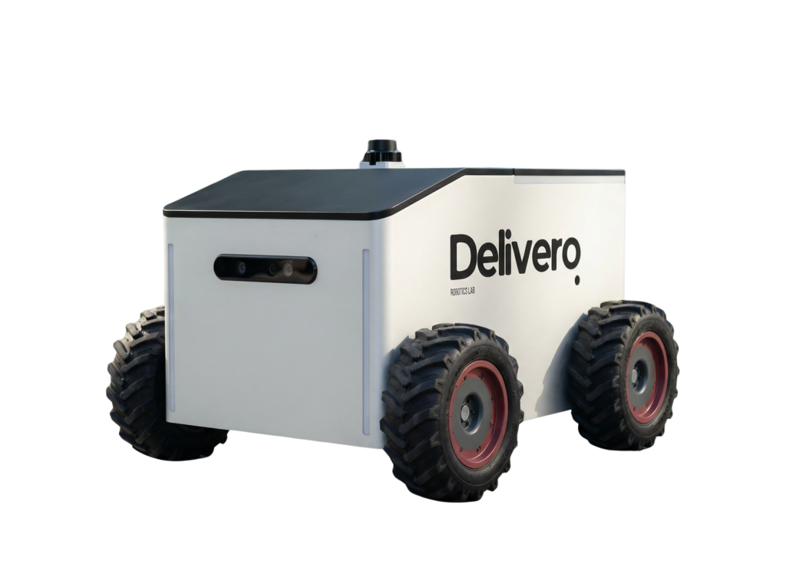
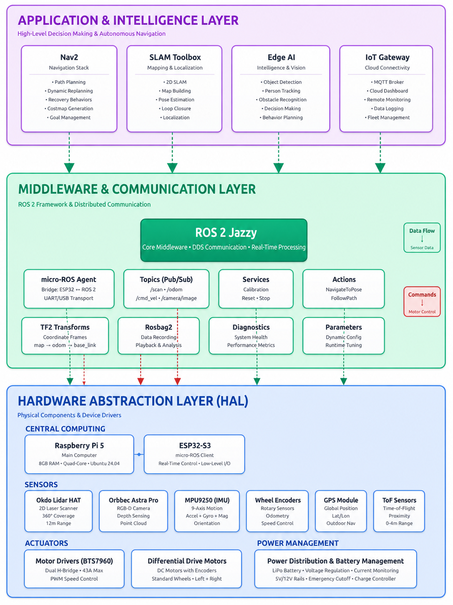
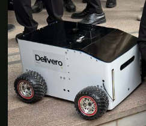
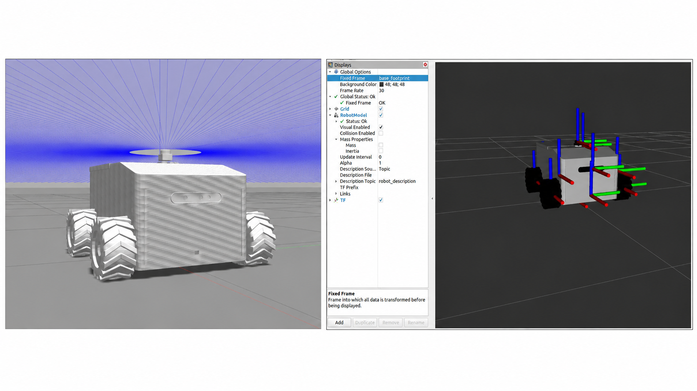
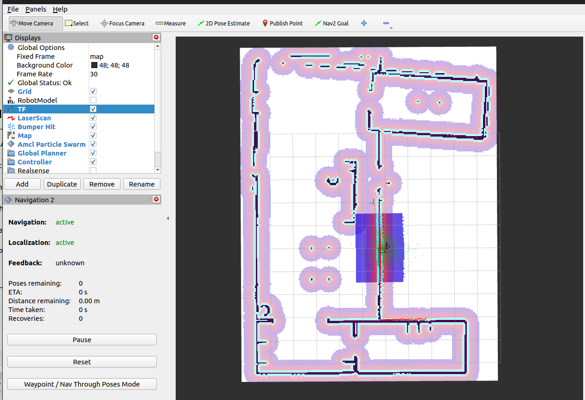

Mapping Demo
Real-time SLAM mapping session showing environment reconstruction and map generation on the AMR platform.
Watch DemoROS 2 Jazzy | Real-Time Perception | Embedded Control | Edge AI
An end-to-end Autonomous Mobile Robot platform developed as a Mechatronics Engineering Graduation Project. The system integrates real-time perception, SLAM, localization, embedded motor control, sensor fusion, and autonomous navigation into a complete robotic platform built around ROS 2 Jazzy.

The AMR project focuses on building a complete autonomous delivery robot capable of mapping indoor environments, localizing itself, planning paths, avoiding obstacles, and executing movement commands through an embedded control layer.
The platform follows a modular ROS 2 architecture where perception, localization, navigation, hardware drivers, robot description, and low-level control are separated into maintainable components.
I worked on the software and robotics integration side of the system, including ROS 2 architecture, perception pipeline integration, robot bringup, embedded communication, sensor integration, navigation stack setup, and system-level testing.
The AMR stack is organized into four cooperating layers that span from sensor input to wheel actuation.
Processes camera data through an optimized YOLO inference node and publishes detection outputs into the ROS 2 graph.
Fuses encoder and IMU data with SLAM Toolbox to build maps and maintain consistent robot pose estimates.
Uses Nav2 for global planning, local control, obstacle avoidance, and velocity command generation.
ESP32-based low-level control using micro-ROS receives
/cmd_vel and drives motors through the BTS7960
driver.
| Sensor / Input | Processing Node / Algorithm | Output / Interface |
|---|---|---|
| Camera | Perception Node / TensorRT | /detections |
| LiDAR | SLAM Toolbox | /map |
| Encoders + IMU | EKF robot_localization | /odom |
| Nav2 | Planner / Controller | /cmd_vel |
| ESP32 Embedded Controller | Low-Level Motor Control | Motor Driver → Wheels |

The platform combines a Raspberry Pi 5 for high-level ROS 2 processing with an ESP32 microcontroller for motor control, alongside LD06 LiDAR, Orbbec Astra Pro camera, wheel encoders, IMU, and a BTS7960 motor driver on a 24V battery system.

robot_bringup packageThe perception system combines LiDAR-based spatial awareness with camera-based object understanding. The LiDAR is used for mapping and obstacle geometry, while the camera and YOLO model provide visual recognition and object-level understanding.
This design solves a key limitation of 2D LiDAR: it can build a reliable map and detect planar obstacles, but it cannot fully understand depth, object type, or complex visual situations. By adding camera perception and YOLO inference, the robot gains a stronger understanding of its environment.
The fused perception output helps the robot decide whether to continue moving, slow down, or stop based on surrounding obstacles and safety conditions.
/detectionsThe Raspberry Pi 5 acts as the high-level perception and decision-making unit. It combines LiDAR readings, camera perception, YOLO detections, and navigation data to evaluate the robot’s surroundings.
Instead of relying only on 2D LiDAR, the robot uses camera perception to improve obstacle understanding and visual context. This allows the system to make more informed movement decisions, especially when the LiDAR map alone is not enough to understand the type or structure of an obstacle.
Based on fused sensor data, the robot can decide whether to continue moving, slow down, or stop.
For safety, the robot includes a low-level emergency layer handled by the ESP32-S3. ToF sensors are used as a fallback safety mechanism for close-range obstacle detection.
If the Raspberry Pi, ROS 2 system, or high-level perception pipeline fails, the ESP32-S3 can still trigger an emergency stop and stop the robot at the nearest safe point. This creates a safer separation between high-level autonomy and low-level embedded protection.
Localization was implemented using robot_localization with an Extended Kalman Filter. The system fuses wheel encoder data and IMU measurements to estimate robot odometry and improve navigation stability.
The TF tree follows REP-105 conventions:
map → odom → base_link
The navigation system uses SLAM Toolbox for mapping and Nav2 for autonomous path planning and control.
Autonomous capabilities:


The embedded control layer is built around an ESP32-S3 running
micro-ROS. It communicates with the Raspberry Pi 5 ROS 2 system,
receives /cmd_vel velocity commands, exchanges
sensor/control data, and translates high-level motion commands into
motor actuation through the BTS7960 driver.
The ESP32-S3 also supports a safety fallback layer using ToF sensors, allowing the robot to stop even if the high-level Raspberry Pi system fails.
This separation allows the Raspberry Pi 5 to handle high-level perception and navigation while the ESP32-S3 manages time-sensitive low-level motor control and embedded safety responsibilities.
AMR_Robot/
├── src/
│ ├── hardware/
│ │ ├── ldlidar_ros2/
│ │ ├── micro-ROS-Agent/
│ │ ├── micro_ros_msgs/
│ │ ├── ros2_astra_camera/
│ │ └── my_robot_description/
│ │ ├── config/
│ │ ├── meshs/
│ │ └── urdf/
│ └── robot_bringup/
│ ├── ESP32_code/
│ ├── config/
│ ├── launch/
│ ├── maps/
│ ├── HARDWARE_SPECIFICATIONS.md
│ └── package.xml
├── .gitignore
└── README.mdThis project is also connected to a research paper published on arXiv:
“A Unified AI, Embedded, Simulation, and Mechanical Design Approach to an Autonomous Delivery Robot.”
The paper documents the unified AI, embedded, simulation, and mechanical design approach behind the autonomous delivery robot platform.
Real-time SLAM mapping session showing environment reconstruction and map generation on the AMR platform.
Watch DemoNav2-driven autonomous navigation with path planning, obstacle avoidance, and velocity control in an indoor environment.
Watch DemoField demonstration of the fully assembled AMR operating in a real indoor deployment scenario.
Watch Demo